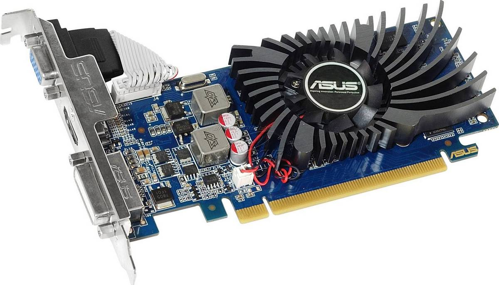
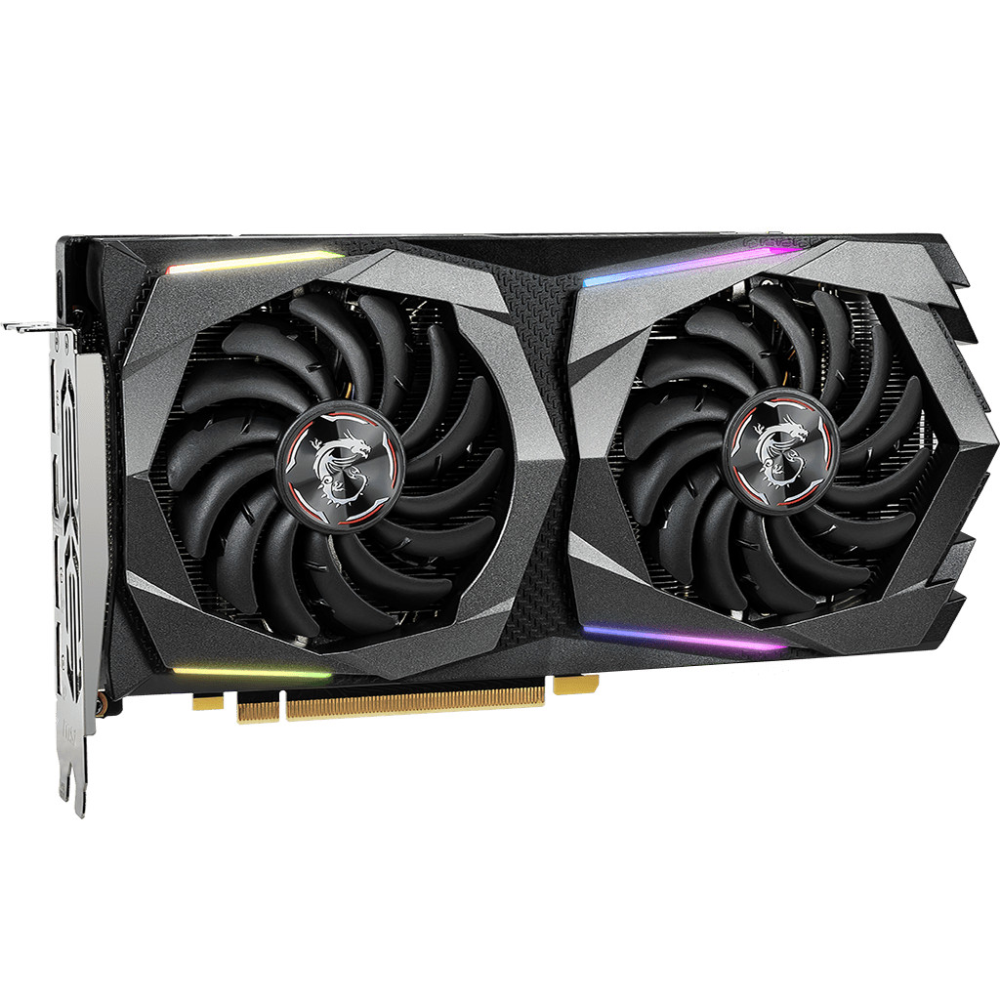

Видеокарта – составная часть компьютера, функция которой заключается в том, чтобы перевести определенные данные, расположенные в памяти системы в доступное изображение.
Если сказать нетерминологическим языком, то видеокарта, или видеоадаптер – деталь компьютера (часто подключаемая плата) которая обрабатывает информацию и передает её на экран.
Они бывают разных видов и размеров, с системой охлаждения и без, но в общем выглядят примерно так:

Давайте рассмотрим более детально функции графической карты. Для этого вернемся к определению, там говорилось, что данное устройство занимается выведением на дисплей вашего компьютера изображение, сформированного из информации, содержащейся в нем.
Следовательно, графическая карта отвечает за все, что вы видите. Уберите ее и все процессы перестанут поступать на экран. Они будут идти, но вы их не увидите.
То есть, вынимаем из системника графическую плату и имеем черный экран.
На самом деле, в большинстве случаев, если из ПК убрать видеокарту, то он даже не запуститься. Дело в том, что большинство BIOS настроено так, чтобы не давать загружаться компьютеру в случае обнаружения каких-либо ошибок, коей и является отсутствие видеокарты.
Не будет того, что предаст данным и происходящим внутри системы процессам вид вполне понятного для вас изображения. Даже больше – если ее не вынимать оттуда, а просто повредить, то уже будут проблемы с переводом данных в образы на мониторе.
Видеопроцессор – как и его старший родственник ЦП, является важным органом графической карты. Он занимается вычислительной работой над проецируемой на ваш монитор картинкой и несет ответственность за 3D графику
Видеоконтроллер – создает образ в оперативной памяти видеокарты, обрабатывает полученные данные от ЦП, выполняет работу в части произведения сигналов развертки для монитора
Видеопамять – фактически является ОЗУ графического ускорителя. В ней находятся информационные данные образа идущего на дисплей
Цифро-аналоговый преобразователь – работает над модифицированием картинки, которую генерирует видеоконтроллер, а также принимает участие в регулировке цветовой гаммы на экране компьютера
Видео–ПЗУ (постоянное запоминающее устройство) – в нем находится БИОС графической карты. Доступ в него есть только у ЦП
Система охлаждения – поддерживает оптимальный уровень температурного показателя графической платы
ЦП вместе с определенными программами отправляет видеоадаптеру данные, необходимые для создания картинки на дисплее
Графическая плата устанавливает верное местонахождение пикселей на мониторе компьютера. Если на этом этапе произойдет сбой, то изображение может получиться не таким, каким должно
Графический ускоритель направляет данные на экран
Фактически эти три шага: отправление графическому адаптеру информации, его работа с ней и вывод результата, представляет всю работу видеокарты.
Но давайте рассмотрим процессы, происходящие на втором шаг подробнее. Для примера возьмем компьютерную игру.
При работе с игровой программой главной задачей графического адаптера является создание 3D изображения.
Здесь огромную роль играют полигоны – различные необъемные фигуры, число углов которых может быть равно, или больше трех.
Полигоны включают в свой состав огромное множество треугольников. Из них строится весь игровой мир.
Графический ускоритель получил информацию касательно игрового мира. Сейчас он должен определить, что конкретно и как окажется в поле зрения игрока, а что нет.
Все необходимое он размещает в кадре. Работая с треугольниками, видеокарта производит предметы, освещение и его влияние на окружение.
В построении игрового мира видеокарта выполняет следующее:
Растеризация – окраска пикселей объекта
z-буферизация – на этом этапе решается, какие из полигонов и треугольников, образующие предметы будут видны
Затенение – благодаря этому этапу, идёт установка цвета предметам отталкиваясь от источника света, и наличия тени
На предметы, произведенные графической платой, будут наложены необходимые текстуры, т.к. без них они не имеют каких-либо отличительных качеств.
По сути, они как модели из 3D принтера, а текстуры это своеобразные наклейки на предметы, которые придают им внешний вид и реалистичность
Тем не менее, не стоит забывать и о таких показателях, как площадь, периметр, диаметр, то есть геометрических показателях фигур и моделей.
Операции по их вычислению довольно объемны и сложны, поэтому все это ложиться на плечи ЦП, чем он мощнее, тем лучше функционирует игра.
С большинством технических моментов мы разобрались, время рассказать о видах графических ускорителей.
Начнем с производителей. И надо сказать, что существует очень много кампаний представляющих широкий ассортимент видеоадаптеров: ASUS, MSI, Sapphire, Powercolor и др.
Их продукция может иметь разный объемом видеопамяти, или отличие в других показателях характеристик, но все производители видеокарт собирают графические ускорители исходя из разработок на основе GPU от AMD (видеокарты Radeon) и NVidia (видеокарты GeForce).
Можно считать, что фактических производителей только двое, остальные используют их разработку, чтобы штамповать новые варианты, но масштабный переворот они не осуществляют.
Конечно, есть ещё и третий производитель Intel, но у него только встроенные видеокарты.
Подведем краткий итог: есть два основных титана на рынке видеокарт AMD и NVidia, а также Intel, в разы уступающая паре своих старших братьев по мощности, так как это интегрированные графические ускорители.
Теперь более подробно о типах видеокарт. Их на сегодняшний день существует три:
Дискретная видеокарта – содержит свой собственный GPU и оснащена видеопамятью, она обособленная составляющая компьютера, которую можно заменить (MSI GeForce GTX 750 Ti, ASUS AMD Radeon RX 460), может похвастаться отличной производительностью
Интегрированная видеокарта – графический адаптер, представляющий собой одно целое с материнской палатой/процессором (GeForce Go 6100, Radeon Xpress 200M, Intel HD Graphics 3000). Очень слабые по сравнению с дискретными образцами.
При желании «усилить» компьютер, вам придется менять одну из частей, с которой связана карта, а это далеко не всегда возможно
Внешняя графическая плата – новичок на фоне других типов видеокарт. Фактически это дискретная видеокарта, которую вы подключаете к своей системе, через PCI переходник (еще вам понадобиться блок питания, хотя можете сразу взять док станцию для вашей графической карты).
Данный тип карт обладает хорошей производительностью, как и полагается самостоятельным графическим платам

От типов графических ускорителей, переходим к характеристикам видеокарт, играющих важную роль в их работе, и общей производительности компьютера:
Линейка графических процессоров – кто производитель GPU: AMD, или NVIDIA
Частота процессора видеокарты – отвечает за число тактов процессора в одну секунду, чем выше данный показатель, тем выше производительность видеокарты. Измеряется в мегагерцах
Объем видеопамяти – объем данных, которые сможет хранить карта, без участия ОЗУ. Память видеокарты также играет одну из важных ролей в её производительности
Тип видеопамяти – к какому поколению она принадлежит (DDR4, DDR3, DDR5), чем новее поколение, тем выше ее быстродействие
Частота видеопамяти – несет ответственность за пропускную способность видеопамяти. Единица измерения – мегагерц
Разрядность шины памяти – стоит за обменом данных между памятью видеокарты и ее процессором, чем выше показатель, тем скорее пойдет обмен, а соответственно будет более высокая производительность у видеокарты (измеряют в битах)
Разъем – вид гнезда для кабеля монитора – HDMI, VGA, DVI-I, DVI-D, DisplayPort
На самом деле еще очень много можно рассказывать про видеоадаптеры, сравнивать типы видеокарт между собой, копаться в мелочах и говорить о показателях производительности графических плат в различных тестах. Но самое главное – для чего и как устроена видеокарта компьютера, а также основные ее характеристики вам известны.
Собственно для этого и создавалась данная страница.